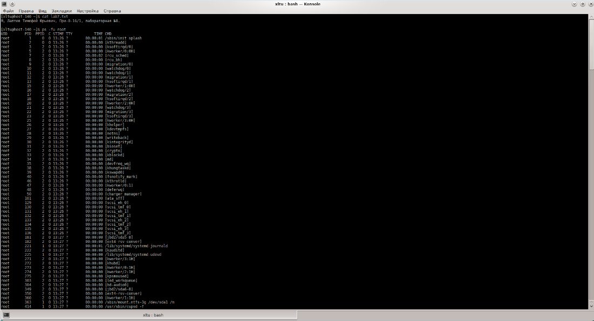
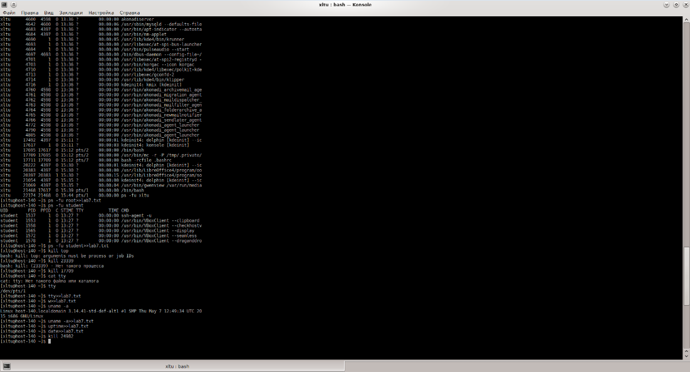
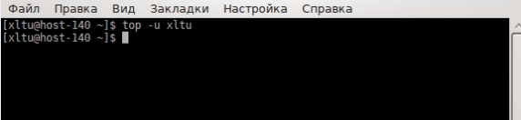
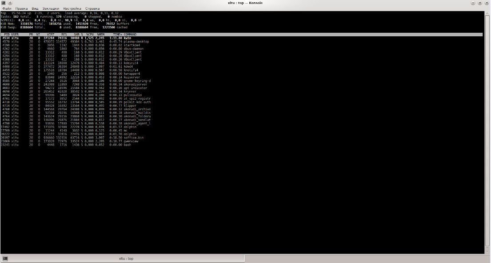

1. Открыть терминал (К → Система → Терминал ( Konsole)). После запуска терминала, в его окне появится приглашение вида
[@<имя компа>] $
2. Прежде всего, убедитесь, что вы находитесь в своём домашнем каталоге. Это можно сделать командой:
$ pwd
Если вы не в домашнем каталоге, то перейти в домащний каталог.
3. Запустить terminal.
4. Создать файл с именем = фио (например, obama_b.txt) командой
$ touch <имя_файла>
5. Ввести следующую информацию «Я, <фамилия имя отчество>, группа <группа>, лабораторная №8».
6. Добавить в этот файл две пустых строки.
7. Добавить в этот файл вывод следующих команды ps так, чтобы были видны id пользователя, запустившего процесс, id процесса, id родительского процесса, приоритет процесса, использование памяти процессом, использование CPU процессом, терминал процесса, команда запуска процесса.
8. Добавить в файл отчёта две пустых строки.
9. Добавить в файл отчета информацию о процессах запущенных пользователем root. Вывод должен быть отсортирован по номеру процесса.
10. Добавить в файл отчета информацию о процессах запущенных пользователем student так, чтобы были видны id пользователя, запустившего процесс, id процесса, id родительского процесса, приоритет процесса, использование памяти процессом, использование CPU процессом, терминал процесса, команда запуска процесса.
Вывод должен быть отсортирован по номеру процесса.
Выборку процессов, принадлежащих пользователю student, делать с помощью команды grep.
11. Запустить ещё один terminal. Ввести команду top так, чтобы контролировать только процессы пользователя student. Скрин окна с терминалом добавить в отчёт с пояснением, что видим.
12. В другом терминале продемонстрировать работу команды kill. Например, убить процесс top. Вывести результат в отчёт.
13. Вывести в отчёт результат выполнения команд
tty
w
uname -a
uptime
14. Добавить в этот файл дату командой «date».
13. Нажать на клавиатуре клавишу PrintScreen. В открывшемся окне программы Ksnapshot клавишей <Сохранить как . . .> сохранить и этот скрин экрана в файл laba10.jpg в свой домашний каталог. Добавить скрин в отчёт.
Порядок сдачи лабораторной.
В отчёте должно быть:
а) задание на лабу;
б) распечатка созданного файла с именем = fio;
в) распечатка скринов экрана с качеством, достаточным, чтобы можно было прочесть информацию в окне терминала;
г) объяснение (комментарии) проделанной работы.
По требованию преподавателя повторить работу в лаб326 и объяснить, что, собственно, делал.



